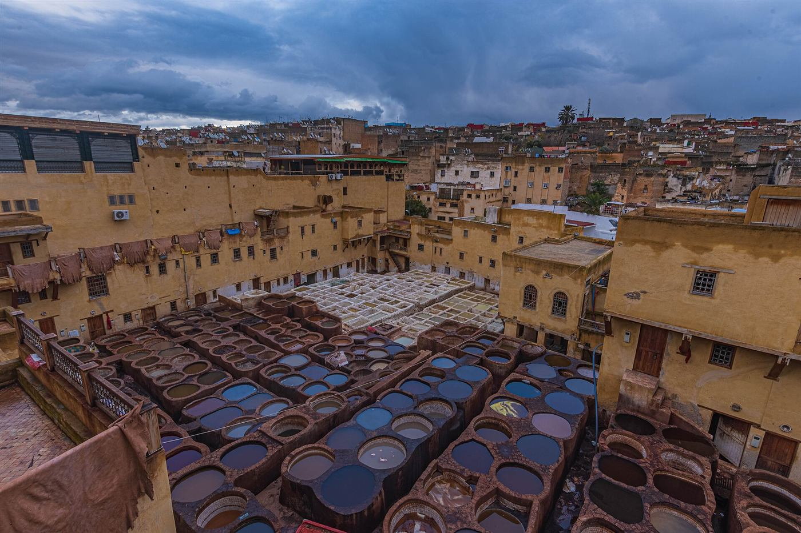
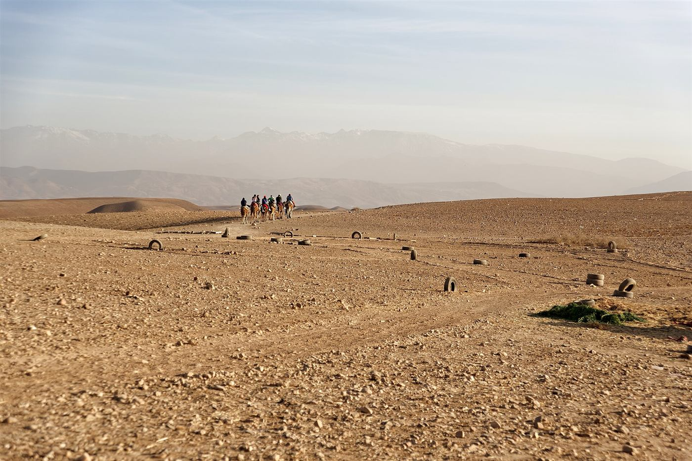

Day 1 · Arrive
Fes medina exploration
Group welcome in Fes. Guided walk through the Fes el-Bali medina — tanneries, souks, and the Bou Inania Madrasa. Overnight in Fes.

This loop out of Fes trades desert dunes for imperial history and mountain color — the royal stables of Meknes, the Roman ruins of Volubilis, and two full nights in the blue-washed lanes of Chefchaouen, all shared with a small group.
Total driving distance is around 520 km round trip, spread over four days so no single day feels rushed.
Group welcome in Fes. Guided walk through the Fes el-Bali medina — tanneries, souks, and the Bou Inania Madrasa. Overnight in Fes.
Morning stop in Meknes (60 km/1 hr) for the royal stables and Bab Mansour gate, then on to the Roman ruins of Volubilis (30 km/30 min). Continue north through the Rif Mountains to Chefchaouen (≈230 km/4 hrs). Overnight in Chefchaouen.
Full free day to wander the blue-washed lanes at your own pace, with an optional guided hike to the Spanish Mosque viewpoint above town for sunset. Overnight in Chefchaouen.
Scenic drive back south through the Rif foothills, arriving in Fes by early evening for onward travel. Trip ends.
Three nights, shared throughout. Expect the same style and price bracket as these real budget properties in each town.
A budget medina hostel in the same bracket as Moroccan Dream Hostel or Riad Verus — shared or twin rooms in a traditional courtyard house, walking distance to the tanneries.
A small blue-medina guesthouse similar to Bleu Home or Pension Soukia — simple, clean rooms a short walk from the main square, often with a shared kitchen or rooftop terrace.
Private rooms are available on all three nights as a paid upgrade — let us know at booking, subject to availability.
Groups are capped at 16 travelers. Departures run every Monday year-round — this route pairs well with our 7-Day Morocco Highlights tour if you're arriving into Fes from the south.
Prefer to start from Chefchaouen or Tangier instead? Ask us — we can sometimes adjust the pickup point.
Booking terms: Send an enquiry first; we confirm the departure, final price, and payment instructions by email. No payment is taken through this website.
A full day and two nights — enough time to wander the blue lanes at your own pace, shop, and hike to the Spanish Mosque viewpoint without feeling rushed.
Yes — it's one of Morocco's best-preserved Roman sites, with mosaics still visible in situ. The stop is roughly 45 minutes to an hour.
This route is fixed round-trip from Fes, but many travelers combine it with our 7-Day Morocco Highlights tour, which ends in Fes and includes Chefchaouen as an optional add-on.
Yes, the €289 price is based on shared twin/dorm rooms throughout. A private room upgrade is available on request, subject to availability.
Departures run on fixed weekly dates regardless of group size — your trip runs even if only a few seats are booked.
 Best Seller4days
Best Seller4daysAit Benhaddou, the Dades Gorges, a camel trek into the dunes, and a night under the stars at a shared desert camp.

One-way route6daysAit Benhaddou, the Dades Gorges and a Merzouga desert camp, then two nights and guided sightseeing in Fes.

Short escape3daysGet beyond the city with mountain villages, a guided valley walk and a sunset dinner in the Agafay stone desert.
Tell us your dates. We reply within 24 hours with availability and the final price.